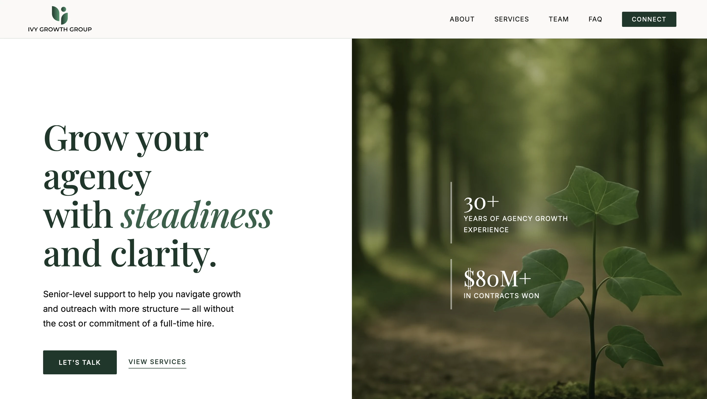
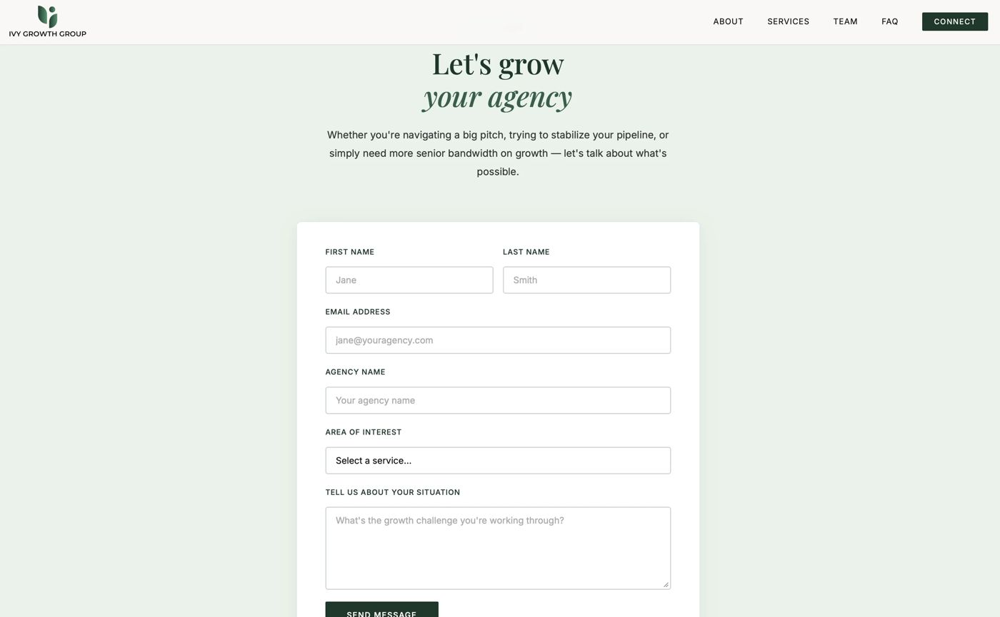
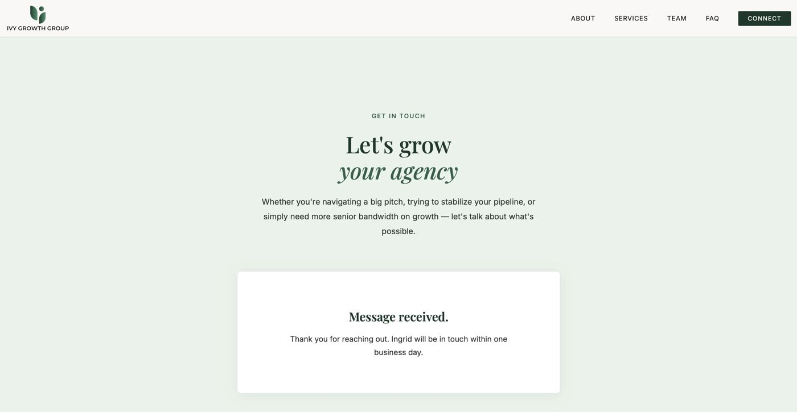
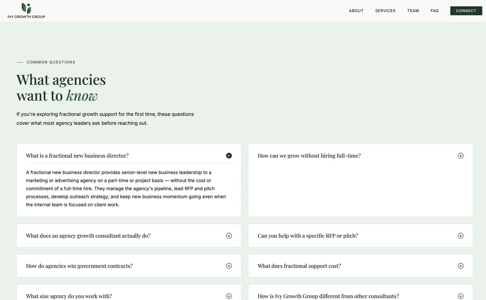
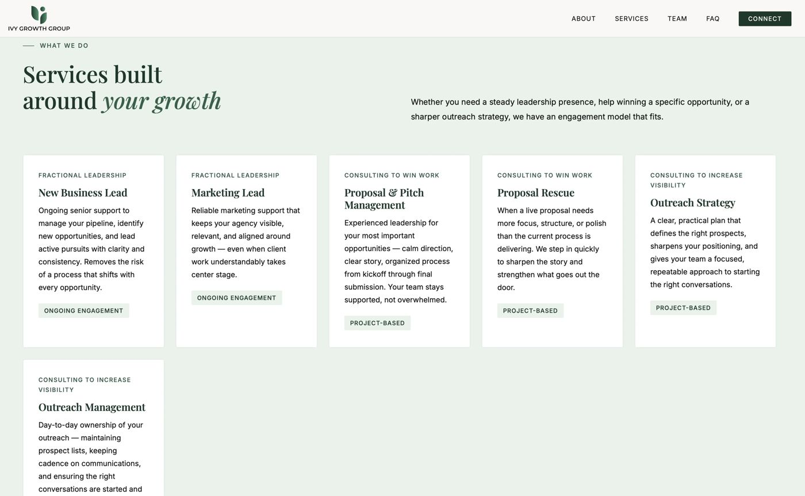

2026 — UX Audit
A heuristic evaluation of the Ivy Growth Group marketing site against Jakob Nielsen’s 10 usability heuristics, surfacing issues in navigation feedback, form validation, and error recovery that affect trust and conversion.

This audit evaluates the Ivy Growth Group marketing website against Jakob Nielsen’s 10 usability heuristics, identifying usability issues and prioritizing the improvements with the highest impact on trust and conversion.
The FAQ page, the Connect contact form, the Services page, and the post-submission confirmation state.
Critical

The Connect interface lacks explicit signifiers for mandatory fields and real-time input validation, increasing the risk of frustration and incomplete submissions.
Add explicit required-field markers and real-time validation to prevent incomplete submissions, matching the site's "efficient and effective" brand promise.
Critical

There is no visible framework for error or "dead-end" states; a broken link or failed form submission could leave a high-value lead stranded without guidance.
Design a clear error state using plain, non-technical language and a direct path back to essential pages.
Moderate

The global navigation lacks a persistent "active" state, which creates unnecessary cognitive friction for users navigating detailed sections like the FAQ.
Add a high-contrast active-state indicator to the navigation so users always know where they are as they explore different pages.
Minor

The three core service pillars — Fractional Leadership, Consulting to Win Work, and Consulting to Increase Visibility — share an identical visual treatment, forcing users to read every description rather than scan for differences.
Give each service category a unique visual anchor, such as an icon or subtle color-coding, so users can scan and compare offerings at a glance.
Together, these changes reduce friction at the site's two most conversion-critical moments — service discovery and initial contact — helping more qualified visitors reach a completed inquiry without confusion or drop-off.
Check out other works by Orawan